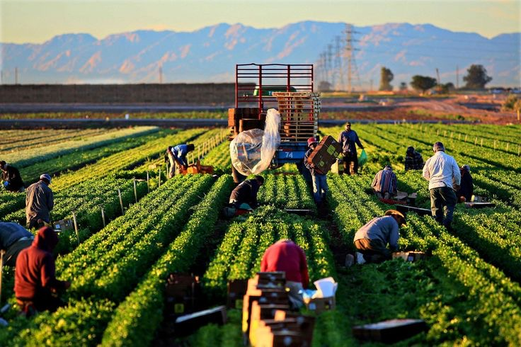
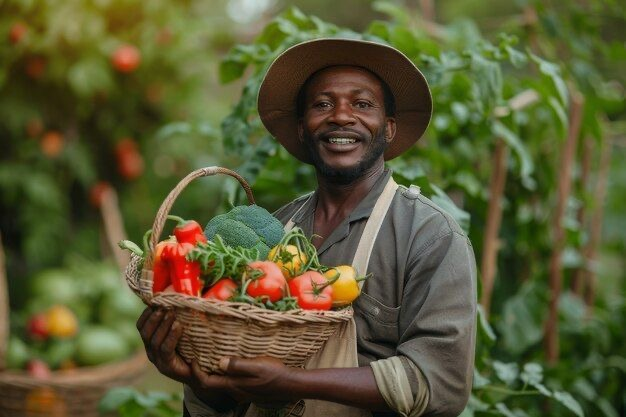

AgricWorld is a leader in organic farming and sustainable agriculture. We provide innovative solutions that increase yield while preserving the natural ecosystem for future generations.
Our farming practices are strictly chemical-free, ensuring the healthiest produce for your family and the planet.
We combine traditional wisdom with cutting-edge precision agriculture technology to optimize every harvest.
Trusted by partners in over 200 countries, we are spreading sustainable farming practices across the globe.

Professional guidance for farm management, soil health optimization, and resource planning.
Learn More
Natural and sustainable soil enhancement techniques to boost productivity without harmful chemicals.
Learn MoreHigh-yield, organic grain production utilizing modern sustainable irrigation and harvest tech.
Learn MoreAgricWorld transformed our farm's productivity. Their organic consulting was a game-changer for our soil health.
The quality of their organic rice is unmatched. It's refreshing to work with a team that truly cares about the environment.
Their irrigation systems are both innovative and sustainable. We've seen a 40% reduction in water waste since installation.